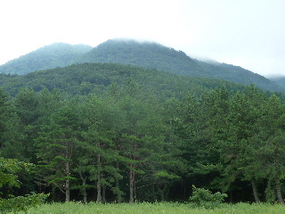
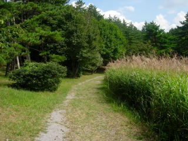
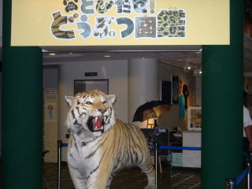
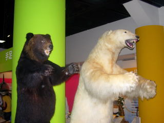
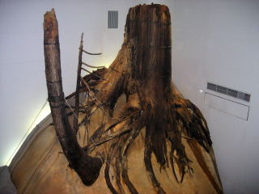

サヒメルに遊びに行きました。
2012/09/02
サヒメルで大型ドーム映像「宇宙兄弟～一点のひかり～」を見ました。
テレビや映画は見てないんでわからないですが、この話は宇宙兄弟が、宇宙飛行士に将来なるぞ！って決心する話でした。
今は夏の企画展「宇宙旅行は夢じゃない」もやっていて、宇宙三昧でした。

外を散歩しようかと思ったら雨が降って来ました。
三瓶まで行って自然に触れれなかったのは残念でした。
島根県大田市三瓶町多根1121-8
2012/09/02
サヒメルで大型ドーム映像「宇宙兄弟～一点のひかり～」を見ました。
テレビや映画は見てないんでわからないですが、この話は宇宙兄弟が、宇宙飛行士に将来なるぞ！って決心する話でした。
今は夏の企画展「宇宙旅行は夢じゃない」もやっていて、宇宙三昧でした。

外を散歩しようかと思ったら雨が降って来ました。
三瓶まで行って自然に触れれなかったのは残念でした。
2010/09/19
夏休みも終わったので、空いてるかな？って思ってサヒメルに行ったらとっても混んでいました。
サヒメルの駐車場は満車で入れなくて、ちょっと離れた臨時駐車場に車を止めました。
バスがありましたが、近くなので歩いてサヒメルまで行きました。

天気が良かったですが、暑すぎず快適な散歩が出来ました。
夏の企画展「とびだせ！どうぶつ図鑑」がやっていて、動物のはく製が展示してありました。

動物園で本物見た方がいいじゃん！って意見もあると思いますが、はく製だと近くで見れるので、動物の大きさが分かりやすくて良かったです。あと、なかなかみれないものもありますよね。
シベリアトラが大きいのは知っていましたが、こんなに大きいとは思いませんでした。

ホッキョクグマとヒグマです。個体差はあると思いますが、ホッキョクグマはもっと大きいのが見たかったなって思いました。
企画展は9/26までです。
大型ドーム映像では、アースストーリーとハヤブサがやっていたので両方見ました。
人気があったため順番待ちでなかなか見れませんでしたが、両方とも凝っている映像で面白かったです。
「アースストーリー」は生命誕生から動物が進化していく過程の話しで、３Ｄ眼鏡を使って立体的な恐竜を見る事が出来ました。あと、ナレーションは忌野清志郎さんでした。
「ハヤブサ」は人口衛生がどうやってイトカワに行って帰って来たかってはなしでした。これは映像がとても綺麗で感動しました。
見ててちょっと酔いそうでしたが、それだけリアルな感じがして面白かったです。
話はちょっと難しいですが、映像見てるだけで満足でしました。新しいドーム映像が出来たらまた見に行きたいって思いました。

これはいつも展示してある埋没林です。色んなものを見れました。
2007/11/10
サヒメルでジャイアントスクリーン映画「カラハリのライオン」を見ました。
ボツワナのカラハリ砂漠にあるオアシスを縄張りにしているライオンと、その家族のドキュメント映画でした。
「ライオンってそうなんだ～。」って感心しながら見れました。
ライオンの生態なんてほとんど知らなかったので、勉強になりました
。
サヒメルっていうと天文関係が多いと思うんですが、これからも色んな映像を映して欲しいです。
すぐ側の北の原では、すすきの迷路が2つ出来ていました。
迷って時間がかかりすぎたら嫌だなとも思ったんですが、やってみると面白かったです。
2コースとも歩いて20分かからない位で、ススキやリンドウや紅葉している木なんかを見ながら、秋を感じながら気持ちいい散歩が出来ました。
しかも他に誰も歩いてなかったので、貸切で快適でした。
2007/3/18
サヒメルのプラネタリウムで、「星と銀のふしぎなつながり ーもう１つの石見銀山物語ー」を見ました。
ここのプラネタリウムでは映像が見れるんですね。
プラネタリウムのドーム天井に、上下左右にワイド表示されるので超大画面です。視界以上の範囲に映像が表示されので、迫力がありました。
今回みたムービーはそんなに綺麗なもではなかったですが、普段見ることの出来ないタイプの映像が見れてとても良かったです。
上映された「星と銀のふしぎなつながり」ですが、自然館サヒメルに合った内容で、石見銀山と天体との関わりを解かり易く紹介していました。
私は石見銀山についての知識がほとんど無かったので、「どうしてそれが世界遺産になるの？」って不思議に思ってたんですが、なんとなく納得出来ました。ためになりますね。
あと、ナレーターが役者の萩原聖人さんだったんですが、教材ビデオっぽくなく、話が聞きやすかったです。
パンフレットを見ると、本館2階建て新館4階建ての施設なので、大きい施設なんだろうなって思ったんですが、行ってみると確かに歩く距離が長かったです。
目立った施設は、ビジュアルドーム（プラネタリウム）、三瓶の自然、埋没林、天体観測室の4つです。
他にもちょこまか色々ありましたが、地味なのであんまり感心がわきませんでした。
ビジュアルドームでプラネタリウムを見たんですが、星座の勉強会みたいでちょっと地味でした。でもプラネタリウムってなかなか見る機会なんてないですし、私は星座のことなんてほとんど知らないので、いい勉強になりました。また見たいです。
三瓶の自然では、靴をぬいで裸足で歩くコースになってるのが、ちょっと変わってて面白かったです。裸足で葉っぱの上を歩くことなんてないので新鮮な感じでした。
新館の2Fから4Fまで吹き抜けで埋没林が展示してあり、大きくてゴツい木がじっくりみれました。見ごたえはあるんですが、2Fから4Fまで階段で上がりながら見るのはちょっと疲れました。
天体観測室は、お昼に行ったので当然何もしてませんでした。
あとはちょこちょこ自然に関するものが色々あったんですが、私は都会の人ではないので、なんか普通だなーって感じでした。